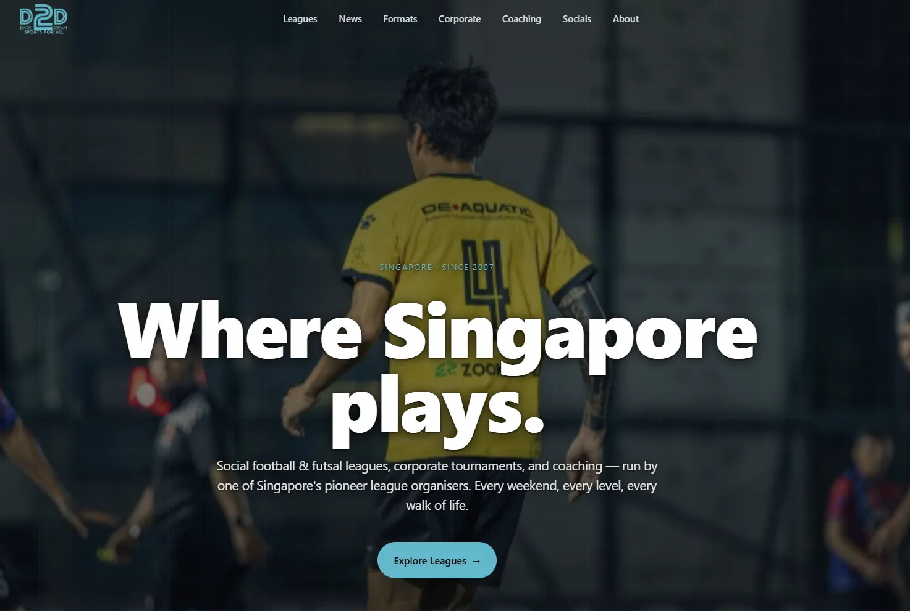
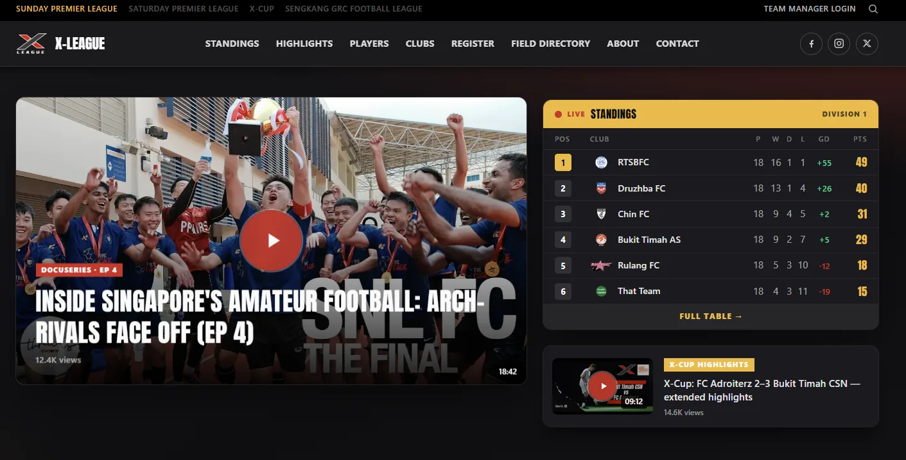

Stackform is one engineer, deployed inside your business. I learn how the operation really runs, build the websites, systems and apps that run it — then stay on.


“Our site is a PDF and a Facebook page.”
Sites people actually use — fast, responsive, and driven by live data instead of a PDF someone re-uploads.
“Everything lives in one master spreadsheet.”
Purpose-built systems for the way the operation actually works — not off-the-shelf tools bent out of shape.
“The busiest day of the week runs on memory and WhatsApp.”
Scheduling, approvals, paperwork, payouts and per-unit P&L — the back office, systematised.
“Everyone keeps asking for the thing that only lives on your laptop.”
Native iOS and Android apps that put the live picture in every pocket — updates, schedules, notifications.
“Someone types the same thing into three places.”
Enter data once; comms, social posts and reports generate themselves.
Sit inside the operation. Watch how the busy days, the sign-ups and the payouts actually happen — spreadsheets, threads and all.
Replace the manual work with software shaped to the operation — public site, admin, ops portal, app, automation.
Run it, evolve it, and keep removing the next bottleneck as the operation grows.
The person you talk to is the person who builds it, working alongside you. Sole proprietorship, Singapore.